Tela 09 • correção de composição
Antes: conteúdo concentrado em ~60% da largura, cartões pequenos, rota 3D diagonal e grande sob o texto, funil e canais comprimidos no centro. Depois: três faixas em ~85% da largura (título • rota em faixa própria • cartões grandes); 09.4 em duas colunas na mesma altura; o 3D se acomoda na faixa livre abaixo do conteúdo, nunca atrás de textos ou cartões.
1920 × 1080
09.1 • Parceiro local e pilotos
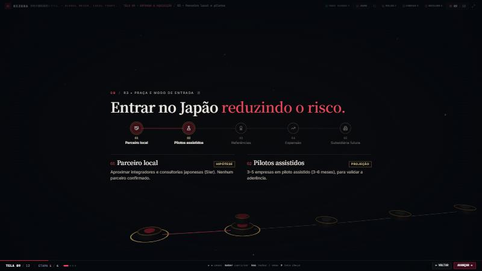

09.2 • Referências e expansão
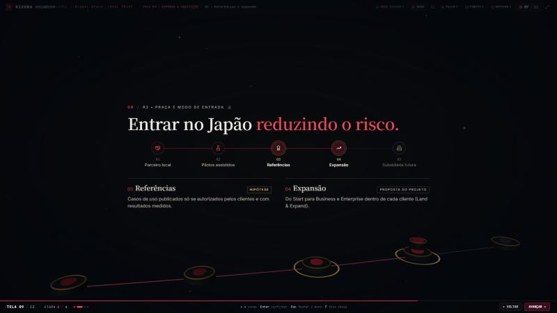

09.3 • Subsidiária futura
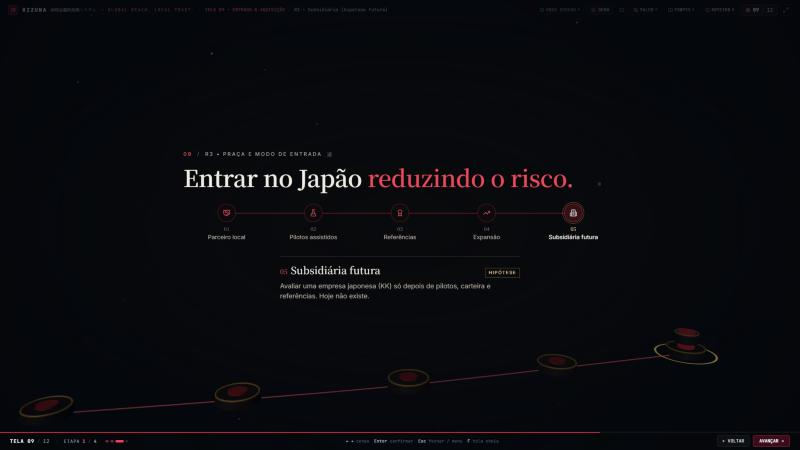
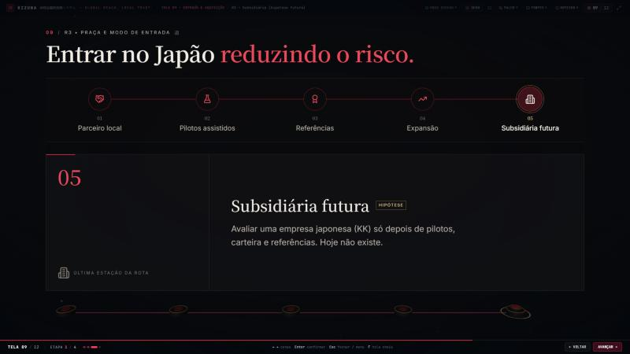
09.4 • Canais e funil
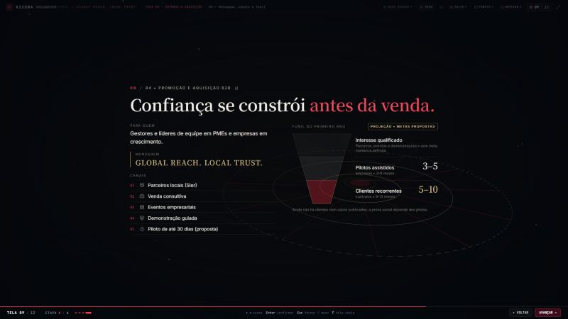
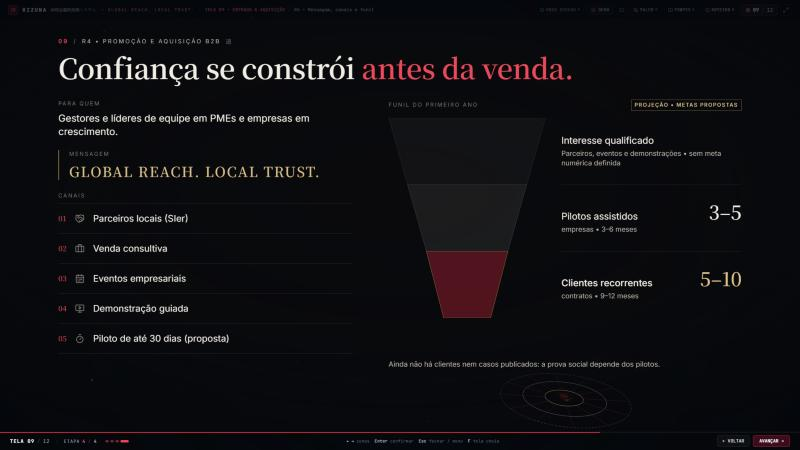
1024 × 768
09.1
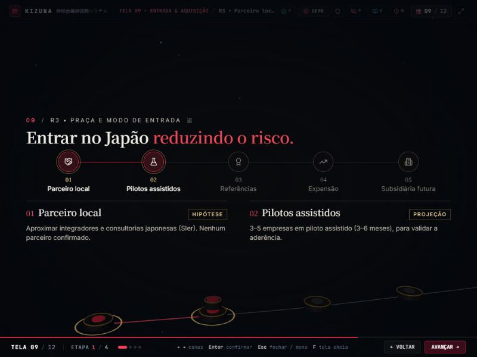
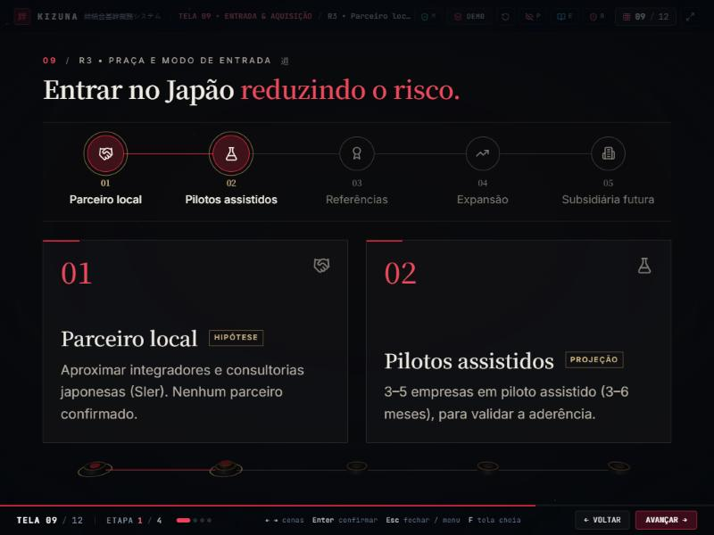
09.2
sem captura
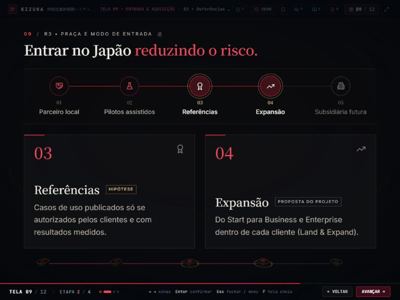
09.3
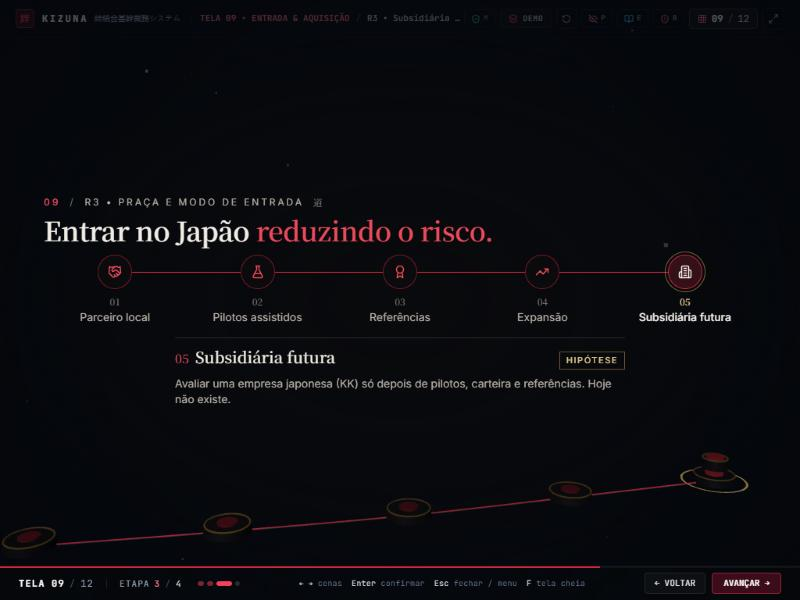

09.4
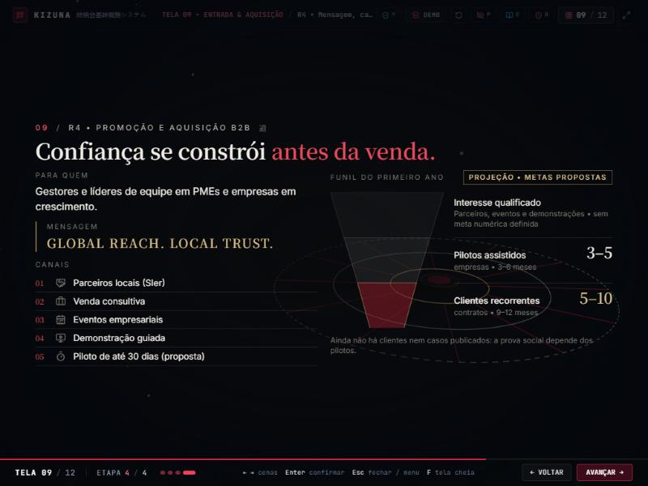

Outras resoluções (depois)
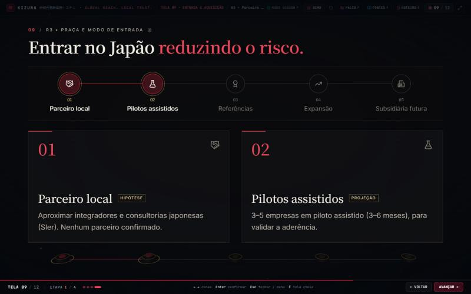
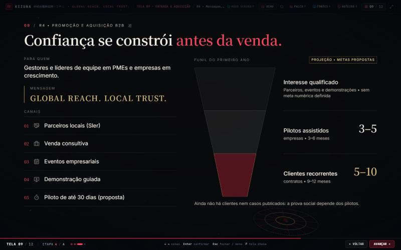
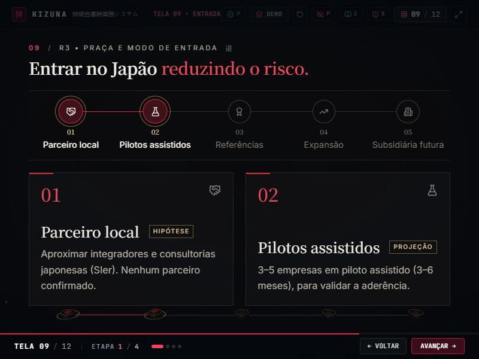
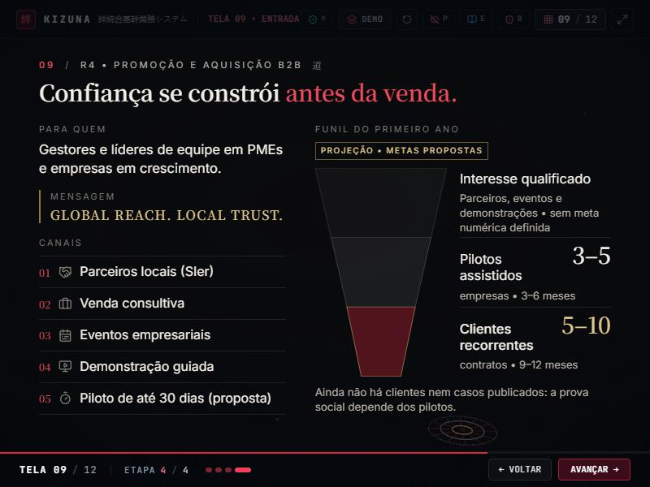